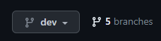

Pull Requests
We use Github for version control, collaboration and code reviews.
Make sure you tick off this checklist before submitting a pull request:
Have you provided the reviewer with a good description of what the code is meant to do? Have you commented throughout the code whenever logic is not obvious? Are the outputs reproducible i.e. will the code work the same on someone else’s machine? Is the code fully automated to prevent human error? Is your code in the right repo and folder within the repo? Have you updated the relevant quality assurance and assumptions logs? Are your imports done from the ‘imports.R’ file? Are your outputs written to the right place in S3?
For future use:
Have you documented all assumptions using the assumptions package? Does your code follow the coding standards? Does your code have adequate unit tests? Does your code and any input data have accompanying quality assurance reports?
Here are the step-by-step instructions to submit a pull request:
Follow the steps on the ‘How to edit Github code’ to make the changes for your ticket
Then go to the relevant repo on Github and navigate to your branch
- Use either the branches drop down or click on ‘x branches’ to go to the branches page and select your branch.

If your push was recent there may be a pop up allowing you to ‘compare and pull request’, if not then click ‘Contribute’ and ‘Open pull request’.

Now check your pull request is set up correctly:
- Make sure you are merging to the correct branch, this will usually be dev (for code in development) or sometimes main if it has been fully quality assured.
- Click ‘Reviewer’ and select the person who has agreed to review your code.
- Make sure your pull request has a title and description that will allow the reviewer to understand what you have done.
- You can also check that the correct files have changed at the bottom of the page.
- You will also need to check there are no ‘merge conflicts’. This is where someone has changed the same files as you and so you need to agree with that person what are the correct changes and modify accordingly, the screenshot below shows ‘Able to merge’ indicating there are no conflicts.

Before submitting your pull request once again make sure you have ticked all the boxes at the top of of this page! Then you can click ‘Create pull request’.
- Once you have created the pull request you should move the ticket to ‘For Review’ on Jira. You should then create a subtask by clicking ‘Add child issue’ and assign this subtask to your reviewer.
Your reviewer will then inspect your code and may ask you some questions or suggest some changes. Once you have responded to these they will approve your pull request and you can merge your changes!